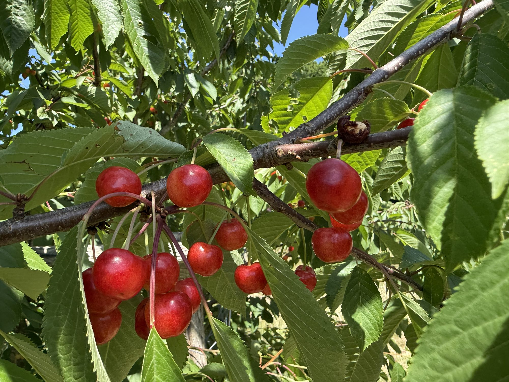

Angebot
Wie wir zusammenarbeiten können
Von der ersten Beratung bis zur fertig blühenden Fläche — praxisnah und auf deinen Ort zugeschnitten.
Biodiversität für Garten, Hof & Balkon
Ich stelle Pflanzenoptionen und den biologischen Zusammenhang vor, die zu dir und deinem Standort passen. Gemeinsam entwickeln wir ein Konzept, das deinen Ort in einen Lebensraum verwandelt — und ich unterstütze dich bei Beschaffung und Umsetzung. Die Beziehung zwischen dir, den Pflanzen, den Tieren und dem Boden verstehe ich als fortlaufenden Prozess; ich begleite dich über Zeit. Ein anderes Erlebnis als klassische Dekorationsgärtnerei.
Naturnahe Schul-, Kita- & Firmengelände
Aus einem ungeliebten Gelände kann ein lebendiges Stück Paradies werden, das Kinder, Lehrkräfte, Mitarbeitende und Eltern gleichermaßen genießen — und das neuen Lebensraum für Vögel, Bienen, Schmetterlinge und kleine Säugetiere schafft. Workshops und Unterrichtseinheiten zeigen dabei die Verbindungen zwischen Tieren, Pflanzen, Geografie, Geschichte, Wirtschaft, Sprache und Handwerk auf.
Naturfasern & ganzheitliche Projekte
In einem mehrjährigen Schulprojekt rund um Schafe und Wolle habe ich Kindern und Mitarbeitenden ermöglicht, Rohwolle und Rohbaumwolle selbst zu verarbeiten: Spinnen, Weben, Stricken und natürliches Färben. So wird Nachhaltigkeit nicht nur erklärt, sondern mit den Händen erfahren.
Vorträge, Workshops & Beratung
Zu Ökologie, Nachhaltigkeit und dem Zusammenspiel von Tier, Pflanze und Boden biete ich Vorträge, Kurse und individuelle Beratungen an — für Privatpersonen ebenso wie für Gruppen, Schulen und Unternehmen.

Kein Strauß, sondern ein Kreislauf
Begleitung, die bleibt.
Ein lebendiger Garten ist nicht in einem Wochenende fertig. Er wächst, verändert sich, reift — wie ein Obstbaum, der Jahr für Jahr trägt. Deshalb geht es mir nicht um schnelle Dekoration, sondern um eine Beziehung zu deinem Ort, die über die Jahreszeiten trägt.
Vorhaben besprechenDer nächste Schritt
Lass uns herausfinden, was zu deinem Ort passt.
Jedes Vorhaben beginnt mit einem Gespräch — ohne Verpflichtung.